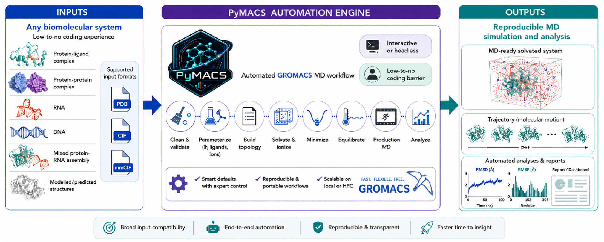
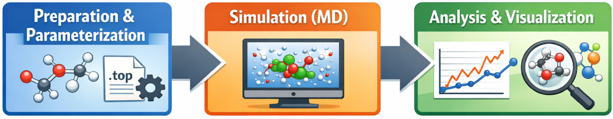
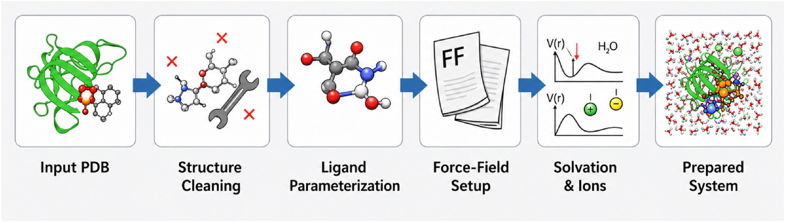
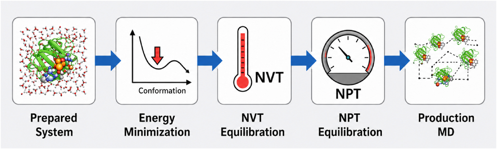
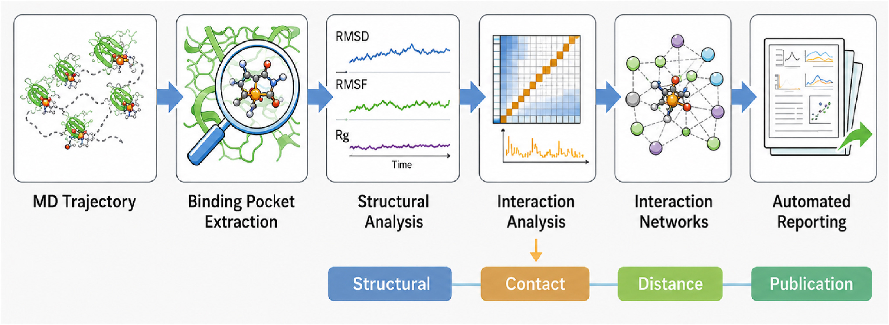
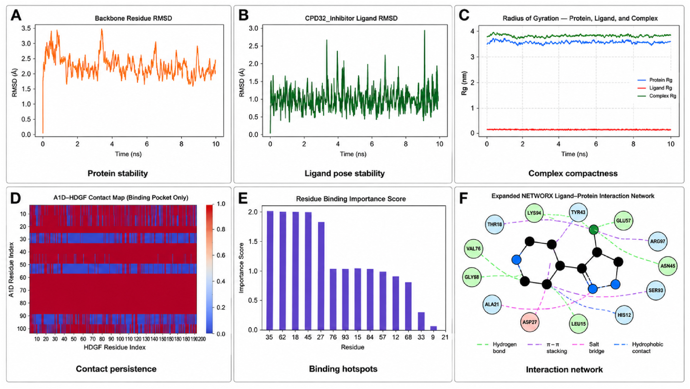
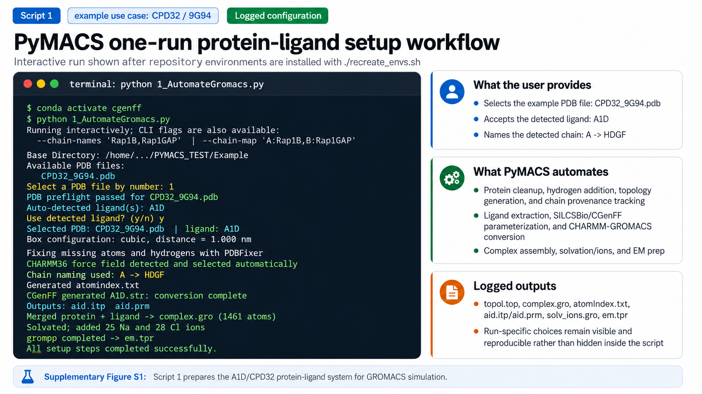
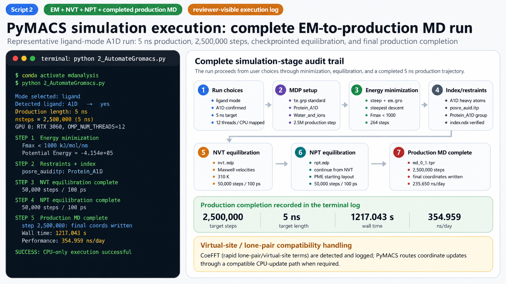

题目：《PyMACS：基于 Python 的 GROMACS 分子动力学设置、模拟与分析自动化套件》（PyMACS: A python-based automation suite for GROMACS molecular dynamics setup, simulation, and analysis）
期刊：European Journal of Medicinal Chemistry（《欧洲药物化学杂志》），2026 年，第 316 卷，文章编号 119038
发表时间：2026 年 6 月在线发表，同年 10 月刊出
作者：

PyMACS 是 2026 年发表在 European Journal of Medicinal Chemistry 上的一篇工具论文[1]，目标是把 GROMACS 的分子动力学（MD）模拟，从结构准备一路自动化到 figurebook 出图。
MD 模拟的难点，集中在跑之前的一长串准备工作——结构清理、拓扑生成、配体参数化、溶剂化……PyMACS 把这一整套流程做成了可复现的工作流工程。本文从架构、核心实现、实战与评估四个角度，对它做一次系统梳理。
分子动力学（MD）领域长期关注物理模型、采样质量与力场精度，而"工作流工程"这一环常被视为"已解决的问题"——似乎会敲 gmx 命令，就等于搞定了 MD。
实际情况要复杂得多。一个标准蛋白-配体体系，从 PDB 到跑完模拟，中间隔着结构清理、加氢与质子化、配体参数化、拓扑生成、溶剂化、离子化、能量最小化、平衡、生产模拟、轨迹处理与结果解释等一串环节，每一步都可能静默失败。论文摘要对此有一句直接陈述："errors at any stage can compromise results and discourage non-expert users"[1]——任何一步出错都可能毁掉结果，也会劝退非专家用户。

工程问题具体到什么程度？PyMACS 自己的 troubleshooting 文档就列了六类常见的 grompp 失败原因：力场不匹配、重复 include、CGenFF 版本漂移、残基名对不上、缺力场目录、缺 checkpoint 文件[2]。这些排障项都写进了仓库文档，是实打实的踩坑清单。
GROMACS 自动化此前已有多套方案，大致可以归成几类：
在这些方案中，PyMACS 的位置很清楚：它站在"规则自动化"一侧，在 CHARMM36/CGenFF 的家族一致性承诺下，把输入校验→拓扑→模拟→分析→figurebook 串成闭环，同时把 MDP、box、cutoff 的控制权留给用户。
PyMACS 的架构可以分成三层：脚本链负责"流程怎么走"，双模式决定"人怎么用它"，运行管理器解决"整条流水线怎么调度"。
第一层是脚本链。1_AutomateGromacs.py（准备）、2_AutomateGromacs.py（EM/NVT/NPT/生产）、3A/3B/3C/3_PROTAC（分析）、4PDF4MD.py（figurebook）依次承接，每一步都可以单独复用——例如已有轨迹时，只运行 3A 就能完成分析。

第二层是双模式。交互问答面向新手，--headless 加全套 flag 面向 tmux、HPC 与脚本化场景。同一套参数两种方式通用，避免了"教程一套、生产一套"的割裂。
第三层是运行管理器。pymacs_run.py 提供 7 个子命令——configure → validate → setup → submit → resume → submit-analysis → status；HPC 档案放在 hpc_profiles/（如 triton.json + LSF 模板），一条 submit 就能生成并提交 GPU 作业。
这样设计的原因在于降低模块耦合、允许中途介入：每步产出即中间品，契合 run-folder 的工作纪律。
可靠性工程是 PyMACS 设计中最突出的一层，可以拆成三点来看：checkpoint 恢复、状态可审计、资源自适应。
--resume --production_only 可以从 checkpoint 直接续跑。有个细节需要注意：restart 时 GROMACS 沿用 tpr 里的长度、不读 md.mdp，因此 --ns 要设成 ≤ 原 tpr 长度。.chainmap.json，组分溯源有 registry 文件，运行决策写进 pymacs_run.json，执行的命令全进日志。力场、末端、链名、盒子、MDP 来源、索引、执行命令，全部记录在案[1]。--compute auto 自动探测 GPU、没有就回退 CPU；EM 阶段刻意避开 PME-on-GPU（非动力学最小化器与它不兼容）；MPI 环境另有整套 gmx_mpi 变体脚本。
PyMACS 的"窄而深"首先体现在力场家族的一致性。仓库内置两套力场：经典 charmm36.ff 与 charmm36_ljpme-jul2022.ff，遇到兼容问题会在两套之间自动回退——这是容错优先的务实设计。
先补一段力场背景：标准 CHARMM36 工作流常用 ~10–12 Å 的 force-switching 处理 Lennard-Jones 相互作用；CHARMM36/LJ-PME 把长程 LJ 交给 particle-mesh Ewald 处理，因此可以用 9 Å 的非键 cutoff 提效[1]。需要留意，这是论文对力场背景的陈述；PyMACS 的实际默认参数由 MDP 模板决定。
这里有一个值得说透的"边界"：仓库内置的 MDP 模板其实是教程级通用值——EM/NPT/MD 的 rvdw/rcoulomb 为 1.0 nm，NVT 为 1.5 nm，使用 DispCorr，未启用 force-switch。PyMACS 的默认 MD 参数都定义在外部 .mdp 模板里，并未硬编码进脚本[1]，高级用法需要用户通过 --mdp-dir、--em-mdp 等 flag 替换模板，或用 --equilibration-plan 定义多级平衡方案。默认体系则明确：SPC 水、0.15 M NaCl、立方盒 1.0 nm buffer[1]（示例常改用 dodecahedron 省溶剂）。
配体参数化走 CGenFF，PyMACS 支持四条路径：① 直接导入现成的 GROMACS 配体文件；② 由 CGenFF server 输出 .str 与 .cgenff.mol2，再本地转换为 GROMACS include（推荐）；③ 本地 SILCSBio 全自动提取与参数化；④ 远程 CGenFF funnel 服务（token 鉴权的 HTTPS，面向没有本地 CGenFF 的 HPC 环境）。版本上锁定 CGenFF 4.6。另外两条边界也写得很清楚：共价配体（LINK/CONECT 检出）默认警告或停止，需 --allow-covalent-ligand 覆盖；核酸残基从配体自动检测中排除，避免 RNA 被误当作小分子。
分析层是 PyMACS 的"广"。基础指标方面，RMSD、RMSF、Rg、二级结构演化一应俱全；配体中心分析则有明确的默认阈值——pocket 5.0 Å、contact 4.0 Å、氢键 3.5 Å/135°，另有 binding-importance ranking（热点残基排名）与 --min_contact_frac（默认 0.10）来控制网络拓扑的收敛范围。措辞上还有一处很严谨：疏水/离子分类被明确标注为"筛选级注释"[1]，论文提醒这类输出不应被当作自由能估计。

特色分支也不少：无配体多链体系自动走 Interface RIN（3C）做界面接触持久性分析；PROTAC 体系有组件级分析、水桥、QC manifest；跨运行对比交给 00_Pymacs_X_analysis.py，它可以扫描一批 run 目录，生成 apo vs ligand、受体家族、跨物种的 HTML 仪表盘[1]。

最后是 figurebook。4PDF4MD.py 按 4_MDfigs.txt 把分析图收进一个 PDF（PROTAC 模式下自动切换 manifest 清单）。相比传统流程"跑 gmx → 导 xvg → matplotlib 画图 → 排版"，PyMACS 把这一步变成了默认产出。它的定位也很明确：figurebook 只负责打包已有分析结果，本身不引入新的科学结论。
下面给出一套最小可运行流程。运行前需要两样东西：装好的 GROMACS 2022+（官方配套了快速安装仓库[2]），以及两个 conda 环境（cgenff 与 mdanalysis）。准备好之后依次执行：
仓库内置 4 个可复现示例：蛋白-配体（CPD32_9G94 + A1D）、配体+辅因子（9UWJ 的 A1E+CLR）、RNA/蛋白装配（1URN）、PROTAC 三元复合物（5T35）[2]。补充材料里还记录了真实跑分：A1D 示例在 RTX 3060、12 线程下，EM 364 步收敛、生产 250 万步（5 ns），速度 354.959 ns/day[1]，全部来自补充材料中的真实运行记录。


生产级的旋钮主要集中在这几处：MDP 模板替换、--index-file 自定义索引、--equilibration-plan 多级平衡、--ns 生产时长；运行中断时用 checkpoint 恢复；多体系对比则交给 00_Pymacs_X_analysis.py。
一个值得注意的启示是：自动化接管流程记忆，物理判断仍留给用户。PyMACS 把资深用户脑子里的流程知识——步骤顺序、默认阈值、恢复策略——编码成默认值和可覆盖的旋钮；但物理参数这一层，它诚实地留给了用户。自动化的要义，是在正确的地方暴露正确的旋钮。
另一个值得观察的问题：这种"力场家族 + 分析闭环 + HPC 提交"的模式能否在 OpenMM / AMBER 生态复制。若复制成功，意味着"工作流产品化"并不只属于 GROMACS 生态。
[1] Schulz J M, Reynolds R C, Schürer S C. PyMACS: A python-based automation suite for GROMACS molecular dynamics setup, simulation, and analysis. European Journal of Medicinal Chemistry, 2026, 316: 119038. https://doi.org/10.1016/j.ejmech.2026.119038
[2] PyMACS. schurerlab/Pymacs. https://github.com/schurerlab/Pymacs
[3] Irrgang M E, et al. gmxapi: A GROMACS-native Python interface for molecular dynamics simulations. PLoS Computational Biology, 2022. https://doi.org/10.1371/journal.pcbi.1009835
[4] GromacsWrapper. Becksteinlab. https://github.com/Becksteinlab/GromacsWrapper
[5] gromacs_py. Murail S. https://github.com/samuelmurail/gromacs_py
[6] Ivanova A, et al. StreaMD: the toolkit for high-throughput molecular dynamics simulations. Journal of Cheminformatics, 2024, 16. https://doi.org/10.1186/s13321-024-00918-w
[7] Ahmad M S, et al. GROMACS-Agent: Text-to-Workflow Generation for Molecular Dynamics. ChemRxiv. https://doi.org/10.26434/chemrxiv.15005078
[8] Campbell Q, et al. MDCrow: automating molecular dynamics workflows with large language models. Machine Learning: Science and Technology, 2026. https://doi.org/10.1088/2632-2153/ae4b07
我已经忘记了我是在什么时候因为什么缘故看到的这篇文章，当时粗略扒拉了一下，正文的几个图很是让人印象深刻，就好像自己不是在看论文，而是在看某个MD入门科普教程一样的。看了看文章摘要，似乎感觉又是有一个在GROMACS外面包一层壳子然后就拿出来卖？卖什么呢？user-friendly? 仔细一看，霍哦，卖“优秀的工程集成”，好吧。
至少让我印象很深刻，我非常疑惑它是如何发到这个European Journal of Medicinal Chemistry的，总不能全是因为作者吧。这个期刊我好像投过，桌拒。或许是嫉妒？我得好好研究一下这个文章。
把SI下载下来……emmmmm，codex生成的图片？还是vibecoding出来的html然后截图？这个图怎么看怎么眼熟，就好像在食堂看到了香蕉炒圣女果，虽然香蕉我每天都吃，圣女果也经常看别人吃（我活了几十年，坚定认为小番茄也是番茄，番茄和黄瓜都是蔬菜，蔬菜必须10成熟才能吃）；但是香蕉和圣女果出现在同一个热气腾腾的锅里，这确实很让我感到世界的奇妙。顺带一说，香蕉是水果，水果只能生吃，加热做成菜也会很奇怪，拔丝香蕉就挺奇怪的，我一直搞不清楚它是甜点还是菜。作者主动披露使用了AI，这倒是挺好。不过不披露也没办法，总不能三五个审稿人一起黑丝蒙眼睛只讲浪漫不讲理性吧……
OK，不管怎么说，它卖"工程集成"，看下来工程这方面确实有几个不错的点。相较于之前的工具，这个东西确实更具有工程和实用的味道，有很多基于实践和工程的考量。近些年LLM-agent很流行，对比起来，确实代码可以提供难得的确定性。但是这个工具开发过程中，作者肯定也反复在考虑某些默认参数的设置等等需要灵活适配用户需求的问题。其实现在大的流行趋势，也应该是agent负责根据灵活的需求变化去智能地设置各种参数，但是具体的流程化的执行，还是交给代码来执行，这会是更优的一个实践路径。
大多数科研圈子里的人搞出来的软件工具，根本谈不上“工程”，架构设计稀烂，只能说“不知道为什么莫名其妙居然会work，whatever，那就发个文章，反正见刊之后也不用维护了，管什么工程架构呢”。从代码仓库的风格来看，我也很怀疑这点儿所谓的工程，可能是GPT老师的工程底蕴，而不是项目自身的。仔细看了仓库，很明显大部分代码都是vibecoding出来的，或者由AI经手整理出来的，风格很明显，git操作估计是第一作者自己弄的，没有AI操作的那种冗长的累赘感觉，也没有一个专业代码工程人员git操作的规范性。至于说这个工具是否有充分的测试、充分的验证？目前我比较存疑。
或许在某个晴朗的午后，两个人漫步在迈阿密的沙滩上，蓝色的海天之间，这位德高望重的导师跟这个正在慢慢罹患永久性脑损伤(PhD)的学生说："哦我的勤奋的同学，我这里有个小小的约稿，不知道同学是否愿意将你平时用的小脚本整理一下发表出来，如果你觉得麻烦的话，我可以请伟大的G先生帮我们看看，你知道的，G先生可不便宜……”。
或许是我狭隘的胸襟和低于机械手表的智商不足以容纳和理解这个工具的美。但从我偏激的角度来看，它对我们还是有些用处，这个工具的代码仓库给我们提供了一个很好的起点。如果我们需要自己构建基于agent的模拟全流程智能化自动化平台的话，这些代码都可以作为不错的参考。虽然他宣称的“降低MD门槛”肯定是没用的，真小白连终端都找不到，还幻想他们能配置环境运行代码？不过小白可以使唤伟大的G先生哈哈哈。把体系需求一说，把仓库给G先生灌进去，至少就搞定了大半了吧。
另外，从这个作者列表的配置来看，原来真的会有两个大佬带着学生一点点培养啊，鼓励学生发表文章、积攒经验，虽然这个文章本身不怎么样……（幻想时间）
抛开实用性和长期维护性来看（抱歉我抛不开呜呜……），这篇文章能发表，至少故事上有一些可以学习的地方，从普通的事情里面找亮点找特色，能写出来确实厉害。是的吧？故事上是可以学习借鉴的吧？是吧？应该是吧……
这篇文章挺好的，好就好在它发表了。
攥住我狭隘瑟缩的心，秋天不快乐，兄弟们~